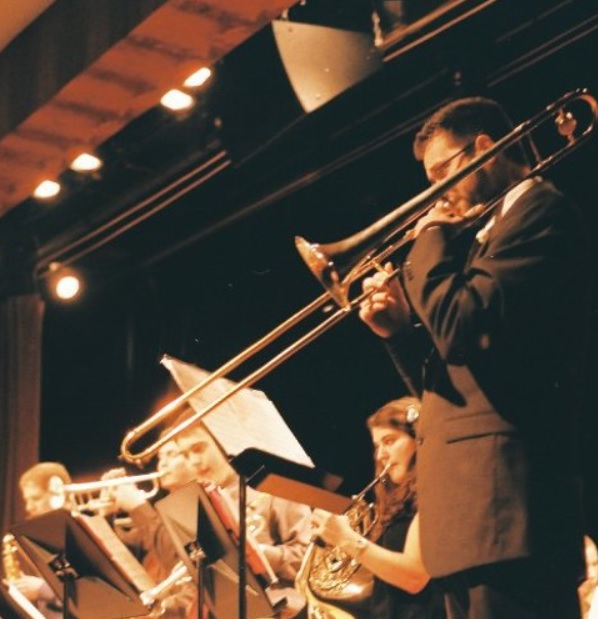

Mr. Shelly's Background
 I have taught elementary general music and choir for 8 years in Windsor, Connecticut. I have previously taught band and orchestra from elementary to high school levels. My undergraduate degree was in jazz trombone, but I also play funk, rock, R&B, soul, bluegrass, and traditional Irish music. I also teach elementary ukulele and have a certification in Level 1 Modern Band. I believe the ukulele is the perfect instrument to engage young students in musical collaboration, songwriting, and improvisation. Outside of playing and teaching music, I love to forage and cook wild food, as well as garden. I am also a student of culinary history and learning about culture through food. One of my favorite things is to make cultural connections through food, history, and the arts. One of my favorite topics to teach is sound production and the physics of music. I have found that teaching how instruments and sound works is a wonderful way to engage students in learning about music.
Education Experience:
Currently Enrolled- Expected Graduation Spring 2022
MS in Information Sciences and Learning Technologies, Emphasis in Technology in Schools
University of Connecticut, Neag School of Education
May 2011
Dual degree in Music Education: B.S. in Education and B.F.A. with Jazz Emphasis
“Jazz, to me, is a living music. It's a music that since its beginning has expressed the feelings, the dreams, hopes of the people.”
-Dexter Gordon
 1-(888)-888-8888
1-(888)-888-8888  Jcrsm3@umsystem.edu
Jcrsm3@umsystem.edu